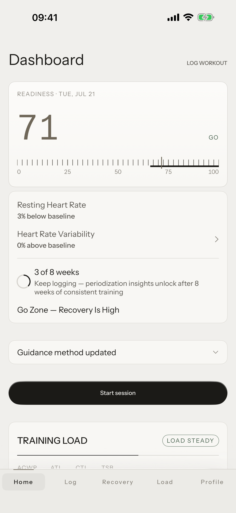
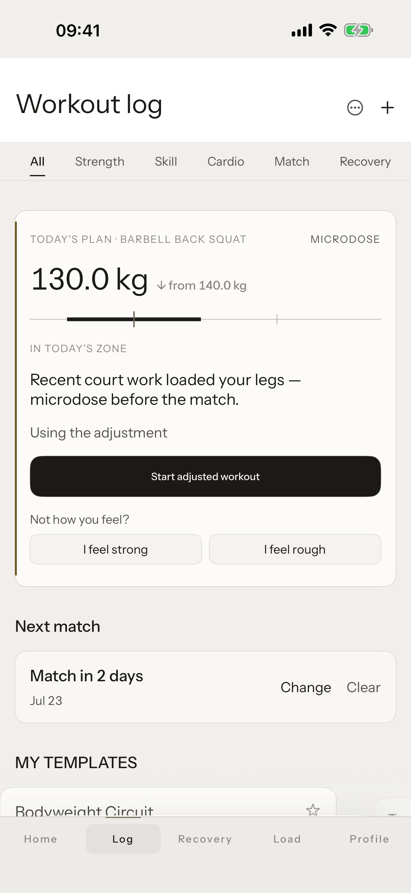
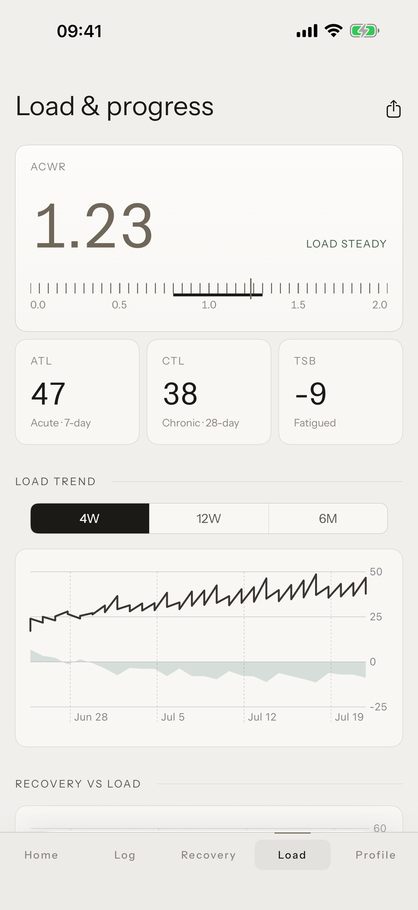
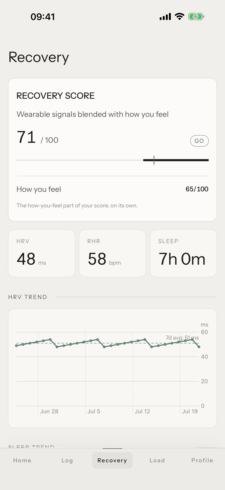
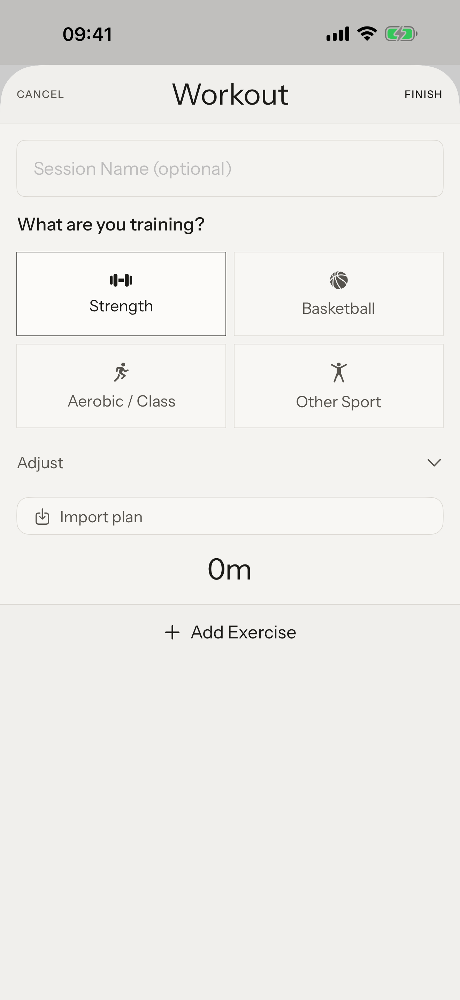

Tuwa reads your body — HRV, sleep, resting heart rate, training history — and modulates the plan you authored: today's numbers, a go / modify / hold verdict, and where your load is trending. It never writes your program.
BUILT FOR ATHLETES WHO TRAIN SPORT SKILL AND STRENGTH IN PARALLEL

Every session starts with a verdict: go, modify, or hold. Tuwa turns this morning's physiology and yesterday's load into concrete number adjustments — drop the top set five percent, cap the conditioning piece, or take the microdose option and keep the pattern without the cost.
Go, modify or hold — with the exact number changes for today's session.
A live view of your acute-to-chronic workload ratio, held inside the band where adaptation outpaces injury risk.
One fatigue budget across sport skill, strength and conditioning.



Sport skill, strength, and conditioning drain the same tank. Tuwa tracks them as one load — acute against chronic — and keeps the ratio inside the strike zone. When the trend points at overreach, you see it days before you feel it.
ZONE NAMES ARE ALWAYS WRITTEN OUT — COLOUR IS SUPPLEMENTARY, NEVER THE MESSAGE


Every metric is scored against your own rolling baseline — not population norms. The line below is 28 days of HRV arriving the way the app draws it.
Tuwa reads HealthKit — it never writes to it — and raw health data never leaves the device. Only composite scores sync.